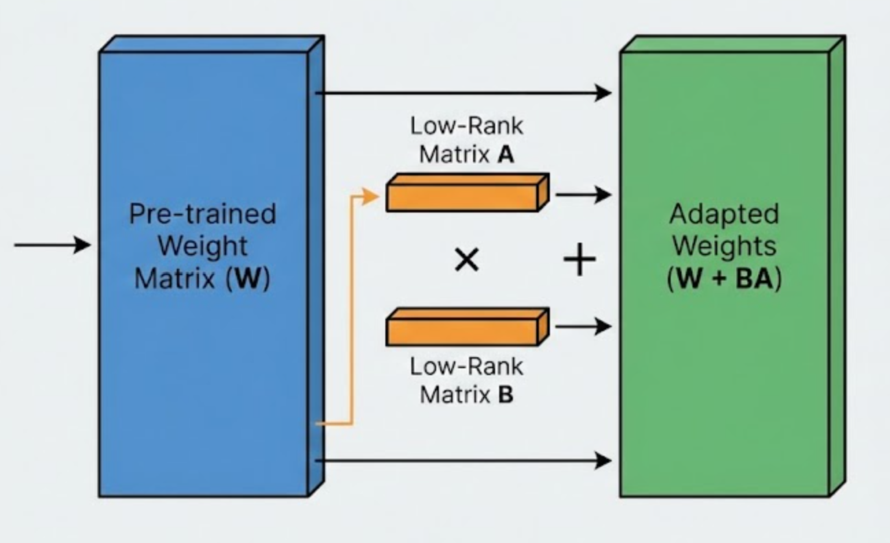

Deep Dive into Low-Rank Adaptation (LoRA)

The promise of Large Language Models is universal capability. The reality is that they are heavy.
Fine-tuning a model like Llama-3 (8B) or even the smaller DistilGPT2 (82M) traditionally meant Full Fine-Tuning (FFT): updating every single weight in the network. For an 8B model, this requires storing 8 billion gradients and 8 billion optimizer states (Adam carries two states per parameter). This quickly exceeds the VRAM of even high-end consumer GPUs.
But do we really need to update all 8 billion parameters to teach a model a new writing style?
In this post, I am going to deconstruct LoRA (Low-Rank Adaptation). We won’t just look at the high-level concept; we will implement the mathematics in PyTorch, calculate the exact parameter savings, and solve specific engineering hurdles like adapting GPT-2’s Conv1D layers and stabilizing inference loops.
1. Mathematics
The Hypothesis: Intrinsic Rank
LoRA is founded on a hypothesis from the paper Intrinsic Dimensionality Explains the Effectiveness of Language Model Fine-Tuning (Aghajanyan et al., 2020). It states that pre-trained models have a very low “intrinsic dimension.” The changes required to adapt them to a new task (\(\Delta W\)) exist in a low-rank subspace.
The Decomposition
Let \(W_0 \in \mathbb{R}^{d \times k}\) be a frozen pre-trained weight matrix. Instead of learning the full update matrix \(\Delta W\) (which would also be \(d \times k\)), we decompose it into the product of two much smaller matrices:
\[W = W_0 + \Delta W = W_0 + B A\]
Where:
- \(A \in \mathbb{R}^{r \times k}\): The “Down-projection” matrix.
- \(B \in \mathbb{R}^{d \times r}\): The “Up-projection” matrix.
- \(r\): The rank (hyperparameter), typically \(r \ll \min(d, k)\).
For example, if \(W_0\) is \(1024 \times 1024\) (\(d=1024\)):
- Full Fine-Tuning: We train \(1,048,576\) parameters.
- LoRA (\(r=8\)):
- \(A\): \(8 \times 1024 = 8,192\) params.
- \(B\): \(1024 \times 8 = 8,192\) params.
- Total: \(16,384\) parameters.
This is a 98.4% reduction in trainable parameters for that single layer.
The Forward Pass & Scaling
The modified forward pass for an input \(x\) becomes:
\[h = W_0 x + \frac{\alpha}{r} (B A x)\]
Notice the term \(\frac{\alpha}{r}\). This is the scaling factor.
\(\alpha\) (Alpha): A constant that determines the strength of the adapter.
Why scale? It decouples the hyperparameter search. If you tune your learning rate for \(r=8\), scaling by \(1/r\) ensures you don’t need to re-tune the learning rate if you try \(r=16\) or \(r=4\).
Without \(\alpha\), if you increased the rank from 8 to 64, the “signal” coming out of the LoRA matrices would become much stronger, potentially blowing up your gradients or overshooting the local minima.
With \(\alpha\), because it is part of the fraction \(\frac{\alpha}{r}\), increasing the rank automatically decreases the scaling factor. This means you can experiment with different ranks (\(r=8, 16, 32, 64\)) without having to restart your hyperparameter search for the perfect learning rate every single time. If you decide to increase the rank later to capture more complex patterns, the \(\frac{\alpha}{r}\) term will keep the “magnitude” of your updates consistent, so your training remains stable
2. Implementation of The LoRALinear Layer
Implementing this in PyTorch requires wrapping an existing nn.Linear layer. We must ensure the original weights remain frozen while \(A\) and \(B\) are trainable.
import torch
import torch.nn as nn
import math
class LoRALinear(nn.Module):
def __init__(self, base_layer: nn.Linear, rank: int = 8, alpha: int = 16):
super().__init__()
# 1. Capture the existing weights
self.base_layer = base_layer
# 2. Define LoRA Hyperparameters
self.rank = rank
self.scaling = alpha / rank
# 3. Extract Dimensions
# Note: In PyTorch Linear, weights are stored as (out_features, in_features)
self.in_features = base_layer.in_features
self.out_features = base_layer.out_features
# 4. Initialize A and B
# Matrix A: (rank, in_features) -> Down projection
self.lora_A = nn.Parameter(torch.randn(rank, self.in_features))
# Matrix B: (out_features, rank) -> Up projection
self.lora_B = nn.Parameter(torch.zeros(self.out_features, rank))
# 5. Freeze the Base Layer
self.base_layer.weight.requires_grad = False
if self.base_layer.bias is not None:
self.base_layer.bias.requires_grad = False
# 6. Reset Parameters (Crucial Step)
self.reset_parameters()
def reset_parameters(self):
# Initialize A with Kaiming Uniform (standard for Relu/Linear networks)
nn.init.kaiming_uniform_(self.lora_A, a=math.sqrt(5))
# Initialize B with ZEROS
# This ensures that at step 0, BAx = 0.
# The model starts exactly as the pre-trained model.
nn.init.zeros_(self.lora_B)
def forward(self, x: torch.Tensor) -> torch.Tensor:
# Standard Path (Frozen)
result = self.base_layer(x)
# LoRA Path (Trainable)
# Equation: (x @ A^T) @ B^T * scaling
# Note: PyTorch linear uses x @ W^T, so we transpose A and B
lora_out = (x @ self.lora_A.t()) @ self.lora_B.t()
return result + (lora_out * self.scaling)Why Initialize B to Zero?
This is a critical engineering detail. If we initialized both \(A\) and \(B\) randomly, the untrained adapter would inject random noise into the forward pass before training even began. This would degrade the model’s perplexity instantly. By setting \(B=0\), the initial product \(B \times A\) is zero, preserving the pre-trained behavior perfectly at step 0.
3. Architecture: Where Does LoRA Actually Live?
When we say a model like GPT-2 Small has 124 million parameters, we are essentially saying it stores 124 million individual decimal numbers (weights) in its memory. If you were to open the model’s file, you would see giant grids (matrices) of floating-point numbers.
To understand exactly where LoRA injects itself, we need a map of these 124M parameters. Here is the anatomical breakdown of a standard Transformer block.
A. The Embedding Layer (~39M params)
Before the model thinks, it converts words into numbers.
- What it is: A giant lookup table.
- The Matrix: If the vocabulary is 50,257 words and the hidden size is 768, this is a matrix of shape
[50,257, 768]. - LoRA Impact: We typically do not apply LoRA here. These weights remain frozen.
B. The Transformer Blocks (The Core)
This is where the logic happens. A 124M model stacks 12 identical blocks. Each block has two main “rooms” where parameters live, and this is where we apply LoRA.
1. The Attention Room (c_attn)
This is the most common target for LoRA (target_modules=["c_attn"]).
- The Weights: This layer holds the matrices for Query, Key, and Value.
- The Shape: For a hidden size of 768, the
c_attnlayer is typically one giant matrix of[768, 2304](since \(768 \times 3 = 2304\) - Query, Key and Values). - Parameter Count: \(768 \times 2304 \approx \mathbf{1.7 \text{ million parameters}}\) per block.
- LoRA Strategy: We freeze these 1.7M numbers. We then inject an Adapter (\(A\) and \(B\)) that approximates the changes to this layer.
2. The Feed-Forward Room (mlp)
After each attention layer, data flows through two dense layers.
- The Weights: One layer expands the data (768 \(\to\) 3072) and the second shrinks it back (3072 \(\to\) 768).
- Parameter Count: This is actually the “heaviest” part of the block, containing roughly 4.7 million parameters.
- LoRA Strategy: While original LoRA papers focused on Attention, modern implementations (and DoRA) often target these MLP layers as well to capture more stylistic nuance.
C. The Final Head (~39M params)
At the very top, the model converts its internal thought vector (768) back into a word prediction (50,257 options).
- LoRA Impact: Usually skipped to save parameters, though some fine-tuning strategies target this for vocabulary adaptation.
4. Parameter Reduction Analysis
Let’s look at the actual numbers from my DistilGPT2 project. I targeted the Attention Query, Key, Value projection layers.
Base Model Layer (c_attn):
- Input dim: 768
- Output dim: 2304 (\(3 \times 768\) for Q, K, V)
- Parameters: \(768 \times 2304 = \mathbf{1,769,472}\)
LoRA Adapter (\(r=8\)):
- Matrix A: \(8 \times 768 = 6,144\)
- Matrix B: \(2304 \times 8 = 18,432\)
- Parameters: \(\mathbf{24,576}\)
Reduction Factor: \[1 - \frac{24,576}{1,769,472} \approx 98.6\%\]
Across the entire model, we reduced the trainable count from 82 Million to just ~235,000.
5. Engineering Scars: What Papers Don’t Tell You
Implementing LoRA is one thing; training it is another. Here are two major technical hurdles I encountered.
A. The Learning Rate Gap
If you use a standard fine-tuning learning rate (e.g., 1e-5) with LoRA, your loss curve will flatline.
Why? The gradient signal has to flow through the large frozen \(W_0\) before reaching \(A\) and \(B\). The signal is dampened. The Fix: You must use a significantly higher learning rate for the adapter parameters. I found 8e-4 to be the sweet spot for convergence on the TinyShakespeare dataset.
args = TrainingArguments(
output_dir=f"./results_{name}",
num_train_epochs=3,
per_device_train_batch_size=8,
learning_rate=8e-4,
logging_steps=100,
report_to="none"
)B. Semantic Degeneration (The “Loop”)
During inference, even a well-trained LoRA model can get stuck in loops (e.g., “I am dead. I am dead. I am dead.”).
Why? The model is small (DistilGPT2) and the adapter is forcing a very specific stylistic probability distribution that might be “sharp” around certain common n-grams.
The Fix: Repetition Penalty. In the generation config, setting repetition_penalty=1.0 (default) allows this behavior. I implemented a penalty of 1.2. This mathematically discounts the logits of tokens that have already been generated:
\[P(x_i) = \frac{\exp(logit_i / T)}{\sum \exp(logit_j / T)} \rightarrow \text{if used, } logit_i = \frac{logit_i}{penalty}\]
This simple change forced the model to break the loop and seek “fresh” vocabulary, instantly restoring Shakespearean syntax.
gen_config = {
"max_new_tokens": 40,
"do_sample": True,
"temperature": 0.8,
"top_k": 50,
"top_p": 0.9,
"repetition_penalty": 1.2,
}Conclusion
LoRA is more than just a memory-saving trick. It is a fundamental shift in how we view neural network plasticity. By proving that we can change the behavior of a model by modifying less than 1% of its weights, LoRA suggests that “intelligence” in these models is highly compressible.
This means we can build systems where one base model serves 100 different customers, simply by hot-swapping a 2MB LoRA adapter in RAM for each of the request.
In the next post, I will explore DoRA, which takes this concept further by decoupling the magnitude and direction of these updates.